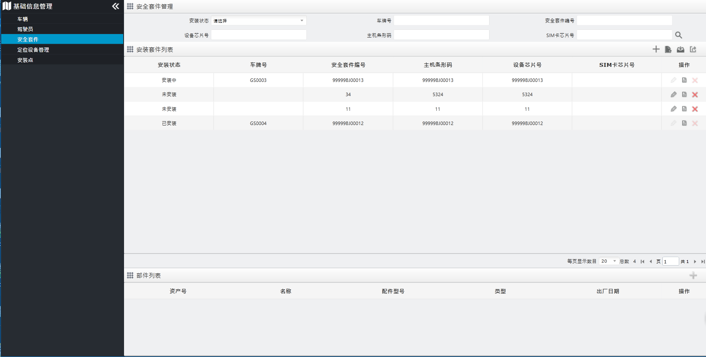

安全套件
维护安全套件信息，可添加、修改、删除、查看安全套件信息，并可批量导入、导出安全套件信息。此外，还可管理安全套件的部件信息（报警按钮、相机、屏幕），可添加、修改、删除、查看安全套件的部件信息。
在左侧导航菜单栏中单击，进入“安全套件管理”页面，如下图所示。

Fig 71 安全套件管理
| • | 查询安全套件 具体操作可参见 查询车辆。
|
| • | 添加安全套件 具体操作可参见 添加车辆。
|
| • | 下载模板 具体操作可参见 下载模板。
|
| • | 批量导入 具体操作可参见 批量导入。
|
| • | 导出安全套件 具体操作可参见 导出车辆信息。
|
| • | 修改安全套件 具体操作可参见 修改车辆信息。
安装状态为“安装中”或者“已安装”的安全套件无法修改，故请在修改前确认该安全套件的安装状态。
|
| • | 删除安全套件 具体操作可参见 删除车辆。
安装状态为“安装中”或者“已安装”的安全套件无法删除，故请在删除前确认该安全套件的安装状态。
|
| • | 查看安全套件 具体操作可参见 查看车辆信息。
|
| • | 安全套件部件管理 安全套件添加成功后，可添加、修改、删除、查看其部件信息，类型包括报警按钮、相机、屏幕。
|